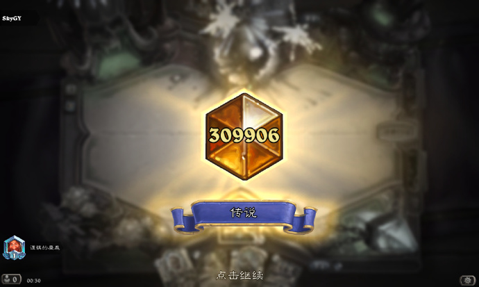

十月，科研和论文的焦虑笼罩着整个月份，游戏、运动、电影的娱乐让我麻痹，正事进展的受阻一次又一次让我感到痛苦。
经历了艰难的心理建设和昼夜颠倒的赶工，最后时刻完成了任务，一切都令人感到疲惫。
达摩克利斯之剑
月底得交论文终稿。
5w字论文的大修，像悬在头顶的达摩克利斯之剑。
10月，重新回到了实验室，回到了宿舍-食堂-实验室的三点一线。跑实验-自我否定-看论文-改论文-重新跑实验，循环往复，身心俱疲。
新舍友
宿舍搬来了新室友，从独居恢复到了合居，我需要重新习惯如何在共享私人空间中保持和谐。
蛋白粉
月初还有精力运动的时候，跑了几个完整的5公里，这对于曾经跑几步就喘的我来说，是一种突破。
三分化升级了哑铃的重量，令人欣慰的是，累计喝完了一罐2磅的蛋白粉。

炉石传说
《炉石传说》国服回归，本想着领完回归奖励就卸载，下载完又想着做完任务抽几包，然而玩起来就停不下来了。
N次卸载，N+1次下载回来，游戏的魅力难以抗拒。

尼古拉斯·凯奇
实在累的时候就看电影。
看了迈克尔·贝的《勇闯夺命岛》，非常精巧的一个故事。顺着尼古拉斯·凯奇主演电影，看了《变脸》和《空中监狱》。这几部都属于好莱坞顶格动作类型大片了，简单直给，爆炸和动作戏拉满。
我已经不期待从电影中获得什么思考，简单的官能刺激，正是我所需要的。


End
没有什么自救指南，一切都是熬过来的。